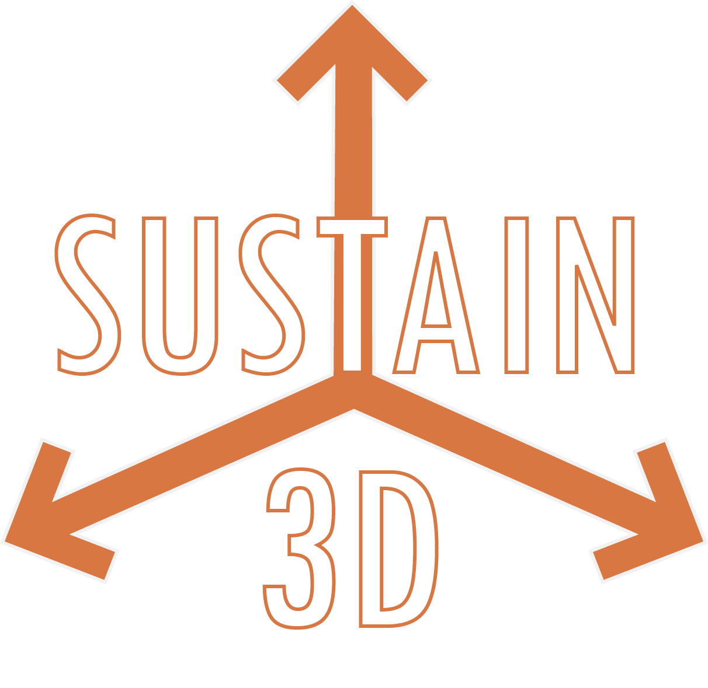
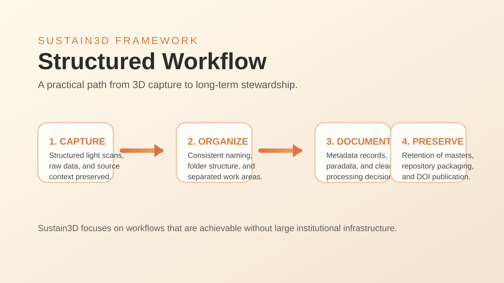
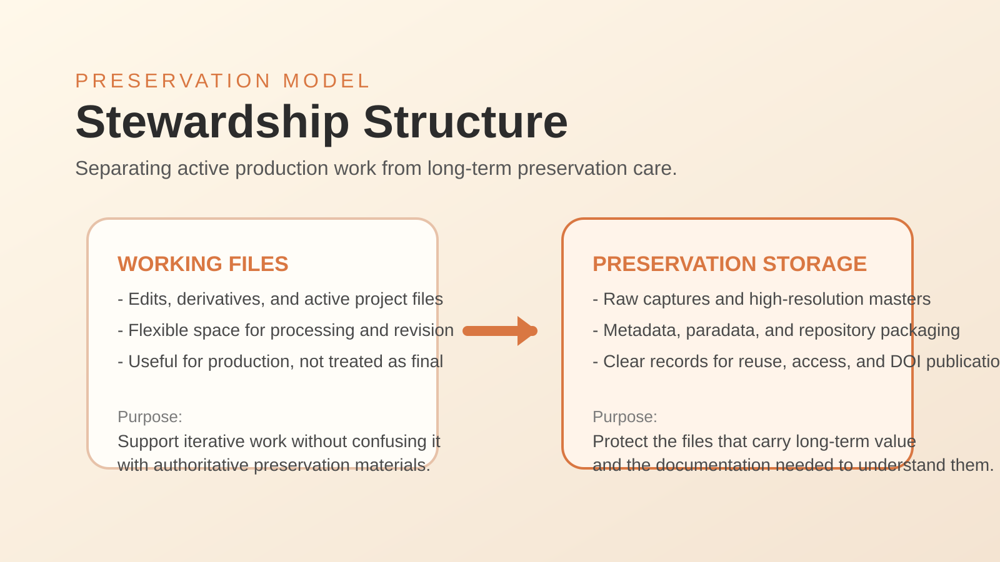

Thesis Context
Submitted to Schreyer's Honors College in partial fulfillment of the requirements for a baccalaureate degree in Digital Media, Arts, and Technology with honors in the same field.

Sustain3D is my Schreyer's Honors College thesis project at The Pennsylvania State University, completed in Spring 2026 for a baccalaureate degree in Digital Media, Arts, and Technology with honors in Digital Media, Arts, and Technology. The project introduces a practical framework for preserving 3D data in a way that is structured, scalable, and realistic for individuals, labs, and small organizations.
The thesis responds to a growing challenge in digital preservation. While scanning and 3D digitization tools are becoming more accessible across cultural heritage, research, and creative practice, the long-term organization and stewardship of 3D assets often remain inconsistent. Sustain3D addresses that gap through clear workflows, naming conventions, metadata guidance, and repository-level structure that make preservation decisions easier to carry forward over time.
Built around FAIR and CARE principles, the framework emphasizes separating working files from preservation storage, retaining raw and high-resolution master files, and documenting processing choices through metadata and paradata. The project grounds those ideas in practice through a case study involving the structured light scanning of a Cooper's Hawk specimen from the Tom Ridge Environmental Center, tracing the path from capture and processing to preservation packaging and DOI publication.
More than a single thesis deliverable, Sustain3D argues that sustainable 3D stewardship does not require large institutional infrastructure. With clear structure, defined responsibility, and realistic storage strategies, the project offers a practical model for preserving 3D data responsibly over time.
Submitted to Schreyer's Honors College in partial fulfillment of the requirements for a baccalaureate degree in Digital Media, Arts, and Technology with honors in the same field.
Reviewed and approved by Elisa Beshero-Bondar, Professor of Digital Humanities and thesis supervisor, and Christopher R. Shelton, Associate Professor of Clinical Psychology and thesis honors adviser.
Structured workflows, naming conventions, metadata standards, paradata, repository organization, and preservation-ready storage planning for 3D collections.

